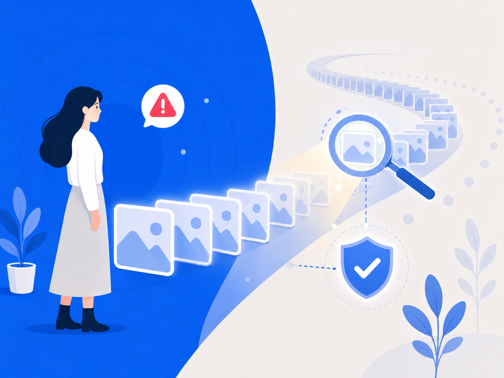
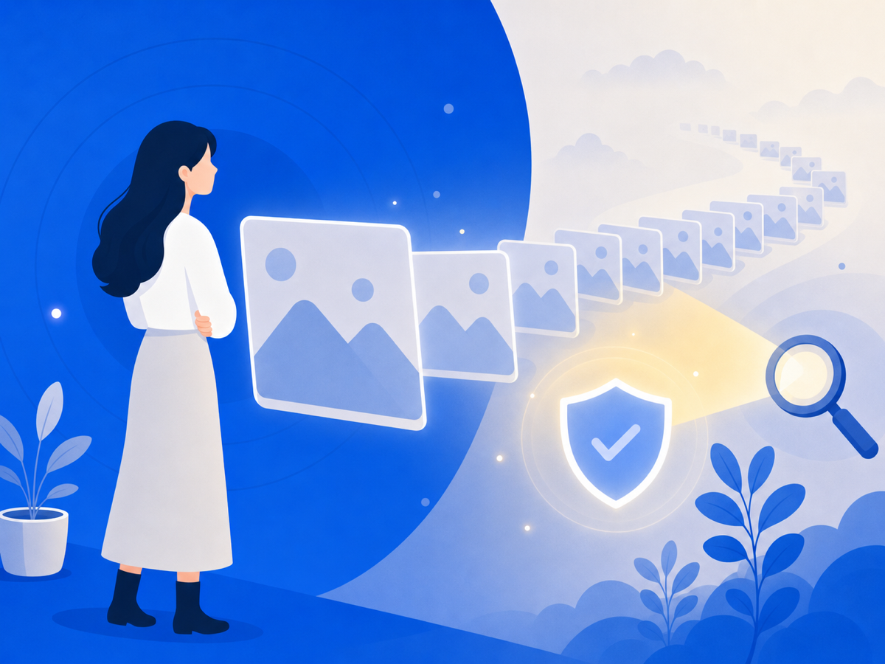

딥페이크 피해는 한 번 삭제로 끝나지 않아요


내 얼굴이 합성된 이미지가 떠돈다는 걸 알게 되면, 그 충격은 말로 다 못 해요. 그런데 더 지치게 만드는 건 따로 있어요. 지웠다고 안심한 순간, 다른 사이트에 또 올라오는 거예요. 끝난 줄 알았는데 안 끝나는 것. 그게 제일 힘들죠.
한 번 삭제로 안 끝나는 이유
디지털 피해는 물리적인 사건이랑 달라요. 복제되거든요. 한 번 올라온 이미지나 영상은 누군가 저장하고, 다시 올리고, 편집해서 또 퍼뜨릴 수 있어요. 그래서 피해 지원도 "한 번 신고하고 끝"이 아니라, 계속 추적하고 삭제 요청을 반복하는 일이 돼요.
2025년 한 해 동안 중앙디지털성범죄피해자지원센터가 도운 피해자가 1만 명이 넘어요. 그중에서도 삭제지원이 가장 큰 비중을 차지했어요. 신규 피해자는 줄었는데 '계속 지원받는' 피해자는 늘었고요. 한 번의 사건이 아니라 긴 꼬리를 가진 문제라는 뜻이에요.
악플도 비슷한 긴 꼬리를 가져요
딥페이크랑 악플은 다른 범주의 피해지만, 닮은 점이 있어요. 온라인에 남고, 복제되고, 다시 발견된다는 거예요.
악플도 그래요. 누가 캡처해 단톡방에 공유하고, 커뮤니티에 다시 올라오고, 검색 결과에 남고, 지워진 글이 다른 데서 인용되고, 새 댓글이 달리면서 피해가 또 갱신돼요. 그래서 피해자는 "이제 끝났다"고 느끼기가 어려워요. 언제 다시 튀어나올지 모르니까요.
그래서 오늘 할 수 있는 건
매일 직접 검색하고, 직접 확인하고, 직접 캡처하는 방식은 오래 못 버텨요. 마음에도, 시간에도 너무 큰 비용이 드니까요.
그러니 혼자 다 짊어지지 마세요. 딥페이크 피해는 중앙디지털성범죄피해자지원센터(d4u.stop.or.kr) 같은 곳이 상담과 삭제지원을 함께 해줘요. 다시 볼 때 받는 충격을 줄이는 것과 필요할 때 증거를 놓치지 않는 것, 그 둘을 혼자 한꺼번에 감당하려 애쓰지 않아도 돼요.
이 글은 일반 정보이며 법률·의료 자문이 아니에요. 구체적인 사안은 전문가와 상의하세요. 많이 힘들 땐 자살예방상담 109(24시간)가 있어요.